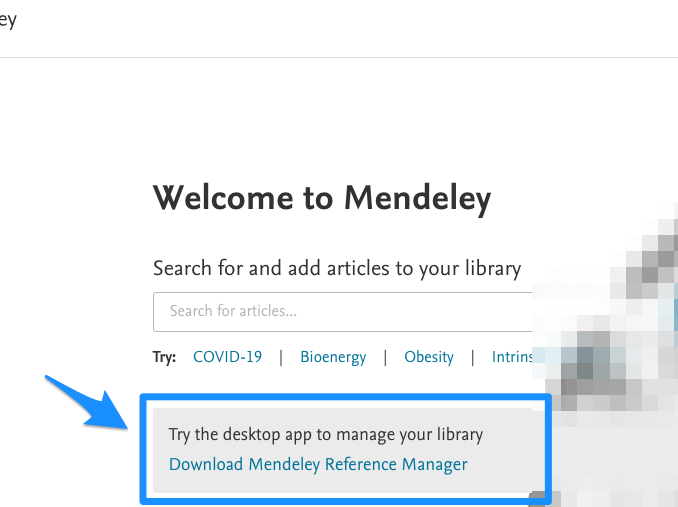

6 Desktop-softat
Edellisissä luvuissa käsiteltiin viitteidenhallintaa web-selaimella toteuttaen, ilman siis tarvetta sille, että olisi varsinaisesti asennettuna tietokoneelle viitteidenhallintasovellus Mendeley Desktopia tai MS Wordia.
Pidemmän päälle sekä MS Word että Mendeley kannattaa kuitenkin asentaa varsinaisina ns. desktop-sovelluksina. Näiden kahden softan yhteiskäyttö on pitkälti samanlaista niin desktop-sovelluksina kuin web-selaimella toteutettuna, mutta mielestäni desktop-sovellusten kautta käyttö on paljon nopeampaa ja jouhevampaa.
Esittelen seuraavassa, miten Mendeleyn desktop-sovellus asennetaan, ja miten siitä edelleen saa asennettua lisäosan (add-in) MS Wordin desktop-sovellukseen (eli varsinaisesti tietokoneeseen asennettuun MS Wordiin). Kyseinen Mendeleyn lisäosa mahdollistaa viitteiden tuonnin Mendeleyn kirjastosta MS Wordissa työstettävään käsikirjoitukseen.
6.1 Mendeleyn asennus
Edellä luvussa “Mendeleyn käyttö” jo esiteltiinkin, miten Mendeleyn desktop-sovelluksen saa koneelleen ladattua asennusta varten. Vielä kertauksena: kun onnistut sisäänkirjautumaan Mendeleyhin, keskelle ruutua tarjoutuu linkki, josta latauksen voi tehdä. Ks. kuva alla:
Huom! Mendeley on julkaissut uuden viitteidenhallintaohjelmiston, jonka nimi on “Mendeley Reference Manager” (ks. kuva alla). Tässä ohjesivustossani puhutaan useissa kohdissa vielä Mendeleyn vanhasta viitteidenhallintaohjelmistosta, jonka nimi on/oli “Mendeley Desktop”.

Alla olevassa osiossa on esitelty Mendeleyn vanhan “Mendeley Desktop” -ohjelmiston käyttöä. Mendeley Desktop -ohjelmisto toiminee edelleen, mutta sen saatavuus on vaikeutunut. Kannattaa joko siirtyä käyttämään “Mendeley Reference Manageria” tai vaihtoehtoisesti esim. Zoteroa.
6.2 Lisäosa Wordiin
Kun olet asentanut Mendeleyn desktop-sovelluksen tietokoneellesi, ja kun tietokoneessasi niin ikään on myös MS Wordin varsinainen desktop-sovellus asennettuna, voit asentaa Mendeleyn lisäosan (add-in) MS Wordiin. Huom! Lisäosan asennuksen aikana MS Wordin pitää olla kokonaan suljettuna.
Asennus on helppoa - klikkaa Mendeley Desktop -sovelluksessa “Tools”-ylävalikosta “Install MS Word Plugin”:

Onnistuneen asennuksen osoituksena näet ikkunan jonka otsikkona on “Plugin Installed”:

6.3 Lisäosan bugi
Olen huomannut - ja kuullut muiltakin käyttäjiltä -, että ainakin Macintoshin MS Wordissa Mendeleyn lisäosa aina välillä heittää herjan (nag), joka valittaa tyyliin:“…you have not actioned this in Mendeley Desktop…”
Herja tulee toisinaan näkyviin mutta ei varsinaisesti estä lisäosan käyttöä. En ole googlettamalla tai keskustelufoorumeilta löytänyt toimivaa ratkaisua tämän herjan poistamiseksi. Lisäosan poistaminen (uninstallation) ja uudelleen asentaminen onnistuu helposti Mendeley Desktop -sovelluksen ylävalikon “Tools” alta, mutta tämä ei poista herjan esiintymistä.
Mendeleyn lisäosaa pystyy Wordissa käyttämään herjasta huolimatta. Kun herjan on kuitannut pois, voi viitteen hakea uudelleen. Herjan saa kuitattua pois painamalla “Cancel”:

6.4 Lisäosan käyttö
Mendeleyn lisäosan käyttö Wordissa vastaa aivan samaa workflow’ta kuin edellä jo esiteltiin kappaleessa “Wordiin viitteet”. Mendeleyn lisäosan toiminnot löytyvät Wordin “Ribbonista”, kohdasta “References”. Mendeleyn lisäosan keskeisimmät kolme toimintoa ja niiden painikkeet on nuolin ja numeroin osoitettuina seuraavassa kuvassa:

6.4.1 Viitteiden lisäys
Käytännössä käyttäjä yleensä:
Lisää tekstin sisäisiä viitteitä (painike 1 yllä)
Valitsee haluamansa viittaustyylin (painike 2 yllä)
Lisää käsikirjoituksen loppuun lähdeluettelon (painike 3 yllä)
- Huom. Lähdeluettelon otsikko (esim. “References” täytyy MS Wordilla itse kirjoittaa)
Lopputulos voisi näyttää seuraavalta (tyyli “Vancouver” valittuna):

Lehtiartikkelien haku utu:n VPN-yhteydellä ja viitteidenhallinta by Ville Langén is licensed under CC BY-SA 4.0